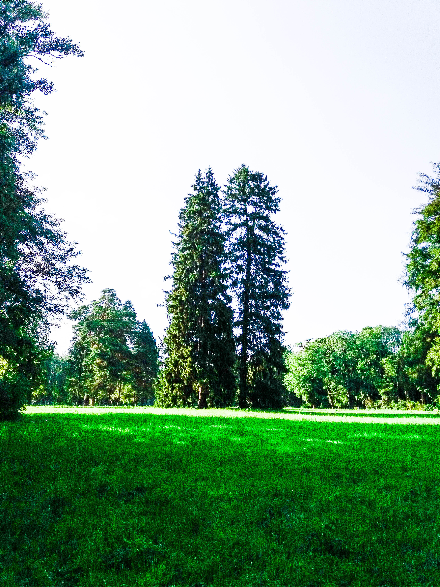

Як і чимало інших подібних парків, «Олександрію» було створено на основі природної діброви, яка сьогодні займає 40 га із 400 га загальної площі парку. На цій ділянці ростуть 2 тис. екземплярів дуба звичайного віком понад 200 років.
Унікальна Олександрійська діброва є Національним надбанням України, інших таких же старовікових і, водночас, чистих насаджень дуба немає більше ніде в Україні. На момент заснування парку діброва була найбільше залісненою його частиною, вона й досі залишається «острівцем незайманої природи», де панує особлива атмосфера затишку та спокою.
У центральній частині «Олександрії» розкинулася величезна (площею майже 10 га) Велика галявина, на якій ростуть понад 100 видів рослин, висаджених дбайливими руками кількох поколінь співробітників парку. Ця галявина теж своєрідний рекордсмен – сьогодні вона є найбільшою українською парковою галявиною, до того ж забезпеченою рясним водопостачанням, яке підтримує зелене різнотрав’я навіть у найбільшу спеку. За формою рельєфу ˗ це неозора рівнина з невеликим нахилом у бік р. Рось, вікові дерева на якій розміщено, як поодиноко, так і невеликими групами.
Звичайно, ростуть на Великій галявині й інші рослини, зокрема ціла колекція різних видів садового жасмину та глоду, скабіоза (або ж конюшина повзуча). Щільні куртини, непробивні для бур’янів, утворює невибагливий вербейник. Усього на галявині налічується понад 170 видів трав’янистих рослин.

Пейзажі з величними деревами доповнює ціла низка природних і рукотворних водойм, об’єднаних у єдину інженерну мережу, – озер, ставків, фонтанів, а також безліч джерелець і струмків, які є невід’ємною частиною будь-якого парку у англійському стилі.
За словами Наталії Дойко, вода останніх не тільки прохолодна та смачна, а й цілюща – завдяки високому вмісту радону. До того ж, чимало джерелець мають постійну температуру +8…9 °С, не замерзаючи навіть за найлютіших морозів, тому на водному плесі ставків постійно зимують місцеві водоплавні птахи.
Через різницю висот паркового рельєфу джерельця та струмки місцями утворюють великі й малі водоспади: теплі джерельця – великий, холодні – малий водоспад (витікає з Холодного ставу, що заповнює частину Крутої балки). Обидва водоспади впадають у Лазневий став. Водну композицію довершує фонтан, висота струменю якого залежить від рівня води у ставу. Загалом, озерами вкрито 10 тис. м2 площі парку. Таку ж площу займає і русло Росі.
Зважаючи на те, що парк створювався з мінімальним втручанням у природні ландшафти, масштабних робіт не його території не виконували. Найбільші з них спрямовувалися на формування ставів у глибоких ярах, які перетинають долину: вибирали ділянку з великим перепадом за висотою і будували загати, завдяки цьому невеликі чашоподібні земляні котловани доволі швидко заповнювалися джерельною водою, перетворюючись на ставки, об’єднані у каскади за допомогою водоспадів (отже, цілком «стоячої» води в «Олександрії» не знайти – стави й озера перетікають одне в одне, врешті-решт впадаючи у річку Рось) і малих архітектурних форм.

Крім типових для помірного клімату аборигенних рослин, в «Олександрії» зростає безліч екзотичних. Закладаючи парк, господиня резиденції графиня Браницька не нехтувала порадами ландшафтних архітекторів, але значну частину видів сама виписувала з-за кордону, щоб надати місцевим краєвидам вишуканості й неповторності, адже місцева флора не вирізнялась особливим різноманіттям. «Наприклад, у листі до свого сина Владислава Олександра Василівна писала: «Будеш у гостях у графині Радзівіл – привези пагінчик каприфолі. Дуже вона мені до вподоби». Так у парку опинилося чимало рослин, не притаманних для Правобережного українського Лісостепу,– говорить Наталія Дойко.
Відвідувачі парку й досі милуються оригінальним цвітінням найстарішого в Україні тюльпанового дерева. Сприятливими місцеві кліматичні умови виявились і для багатьох інших представників далекосхідної та північноамериканської флори.
Загалом, з-поміж близько 4,5 тис. видів, форм і сортів рослин «Олександрії» екзотами є майже 3 тис. Найпершими було висаджено різні тополі. «Сучасники Олександри Василівни писали, що вона не тільки створила красивий парк, а й познайомила місцевих мешканців із канадськими та пірамідальними тополями, – продовжує Наталія Дойко. – На жаль, вік тополі недовгий – у середньому вони живуть 70-80 років, але і за цей нетривалий час сягають велетенських розмірів». Приголомшливою висотою гостей парку дивують дерева тополі сіріючої, висаджені у 1950-х роках, коли «Олександрію» відновлювали з повоєнної руїни.

Серед тополь, висаджених іще за часів Браницьких, зберігся тільки один аборигенний вид – осокір. Який також вирізняється довголіттям – живе, як правило, до 170-200 років. Одному з екземплярів, які ростуть на території парку у Білій Церкві, вже понад півтораста років. Він має 7 м у діаметрі обхваті й сягає висоти 5-поверхового будинку.
До екзотичних видів належить і сосна чорна. Представників цього виду леггко впізнати за формою крони,яка нагадує парасольку.
Ефектний вигляд мають, так звані, «букетні» посадки: кілька дерев укорінюють в одному гнізді, з часом вони знизу зростаються стовбурами, вгорі продовжуючись розлогими кронами. За таким принципом в «Олександрії», наприклад, висаджено дуби поблизу Танцювального павільйону. За задумом ландшафтних архітекторів, їх образ має символізувати пари у танці.
Центральним деревом Малої (дубової) галявини вважається велетенський 200-річний екземпляр. Приблизно визначити його вік вдалося завдяки малюнкові Вілібальда Ріхтера 1828 року, на якому вже зображено цей дуб.
Підкреслити довершеність ландшафтів і спонукати відвідувачів до роздумів покликані витвори мистецтва. Так, про швидкоплинність життя і творіння людських рук тут нагадують «Руїни» античного замку, котрі також є прикметною рисою парку в англійському стилі. Крізь стіни та стелі «Руїн» проросли дерева, підкреслюючи «вік» цієї архітектурної споруди, чи не найоригінальнішої в усьому парку. З боку Лазневого ставу вона має вигляд стародавнього замку без даху, а зі зворотного боку, проглядається ще й нижній ярус, який виконує роль опорної стіни ставкової загати.
Лариса Кривдюк звернула увагу журналістів, що з балкону 2-го поверху замкових «Руїн» відкривається мальовничий краєвид на Лазневий став. Обернувшись на північ, з оглядового майданчика можна помилуватися Россю, водну гладінь якої прикрашає густе латаття, всіяне білосніжними квітами, а на березі – очеретові зарості з яскравими вкрапленнями ірису болотного.